Вправи і завдання до
розділу І
1.
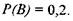
Нехай А і В - дві несумісні події.
Відомо, щота
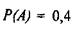
Обчислити
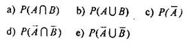
2. Нехай А і В - дві події експерименту, які є множиною елементарних
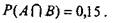
наслідків
£. Відомо, що

Обчислити
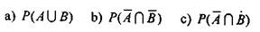
4.
Яка ймовірність, що
 При киданні кубика випаде З?
При киданні кубика випаде З?
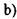
При кидані випаде непарне число?
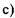
При випадковому витягуванні карти з колоди з'явиться
червова карта?
 При випадковому витягуванні карти з колоди з'явиться
При випадковому витягуванні карти з колоди з'явиться
валет?
4. Дві
карти навмання витягують з колоди, що містить 52 карти.
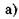
Яка ймовірність появи двох тузів?
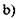
Яка ймовірність того, що жодна із витягнутих карт
не буде
тузом?
5.
Навмання вибрана
група з 5 людей. Яка ймовірність, що хоча б 2 із них
народилося в один день?
6.
Навмання із урни,
що містить 6 білих і 9 синіх куль дістають 5 куль (без повернення). Яка ймовірність того, що
 всі кулі
- сині?
всі кулі
- сині?
 тільки 2 кулі білих?
тільки 2 кулі білих?
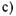
дві або три - білі?
7. Яка
ймовірність, що в сім'ї, яка має трьох дітей
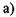
перші дві - дівчинки?
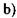
два хлопчики і одна дівчинка?
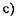
хоча б одна дівчинка?
(Вважаємо,
що ймовірність народження хлопчика і дівчинки - рівноможливі).
8. Дві освітлювальні лампи вибрані
навмання із 24, серед яких 4
лампи з дефектом. Яка ймовірність того, що
 обидві вибрані лампи будуть з дефектом?
обидві вибрані лампи будуть з дефектом?
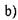
хоча б одна з ламп буде з дефектом?
9. Діаграмне дерево представляє
експеримент, що складається з
двох наслідків.
Використовуючи діаграму знайти
І
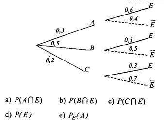
В завданнях 10-12 розглянуто
експеримент: дві карти витягуються навмання (без повернення) із стандартної
колоди з 52 карт.
10.
Знайти ймовірність
появи першою червової карти при умові, що другою з'явиться
також червова карта?
11.
Знайти ймовірність появи першою картою
валета, а другою - туза?
12.
Знайти ймовірність
того, що перша витягнута карта - фігура, а друга - туз?
В завданнях 13-15 розглянуто експеримент: урна А містить 4 білих і 6 чорних куль. Урна В містить
3 білих і 5 чорних куль. Із урни А навмання витягнуто кулю і перекладено в урну В. Із урни В навмання
витягнуто кулю.
13.
Представити ймовірність, що відповідає двом етапам експерименту у вигляді діаграмного
дерева.
14.
Яка ймовірність
витягти із урни
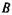
білу
кулю, якщо перекладено також білу кулю?
15.
Яка ймовірність
витягти із урни В білу кулю, якщо перекладено чорну кулю?
16. Компанія має чотири автоматичні лінії
для виробництва
ідентичних деталей для їх використання у відеокасетних
плеєрах. Пропорційна кількість деталей, виготовлених на
кожній
автоматичній лінії, та відповідні ймовірності виробництва
деталей з дефектом представлені в таблиці.
Яка ймовірність, що
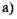
навмання взята деталь буде дефектною?
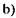
дефектна деталь вироблена лінією І?
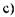
дефектна деталь вироблена лінією II?
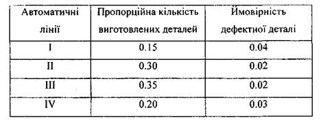
17. Страхова
компанія зібрала інформацію відносно віку водіїв та
ріння дорожніх аварій за один рік
для водіїв певних вікових
груп.
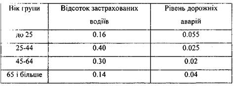
а) Яка
ймовірність, що застрахований водій потрапить в дорожню аварію?
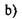
Яка
ймовірність, що застрахований водій, який потрапив
в аварію, має вік до 25 років?